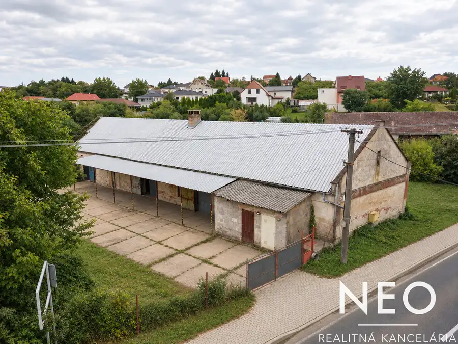
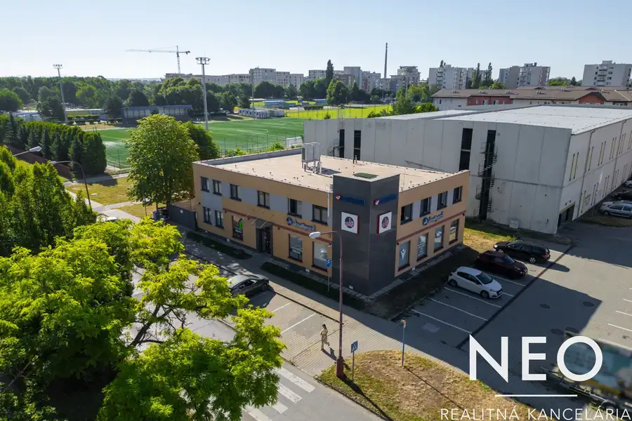
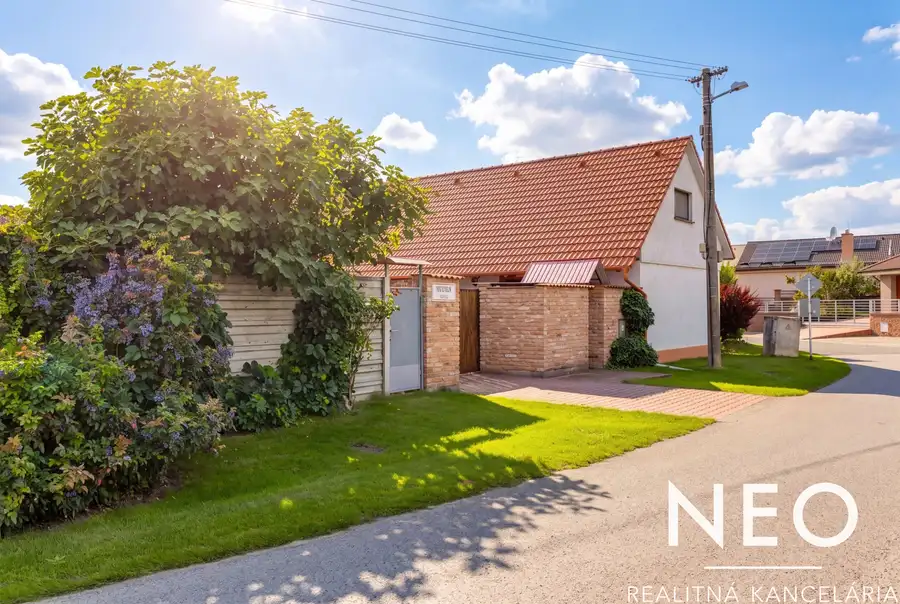

NEO | ZicherHouse : exkluzívna investícia v srdci historickej Trnavy
Trnava
- Dispozícia2-izbový
- Plocha35.85 m²
- Poschodie2. z 4
- StavVo výstavbe
- VlastníctvoOsobné
O nehnuteľnosti
Projekt ZicherHouse predstavuje exkluzívnu rezidenčnú nehnuteľnosť situovanú v historickom centre Trnavy, na Divadelnej ulici. Od začiatku je navrhnutý ako limitovaná príležitosť, ktorá spája atraktívnu lokalitu s modernou, no zároveň nadčasovou architektúrou, s dôrazom na čisté línie a výrazný vizuálny charakter.Na rozdiel od rozsiahlych rezidenčných projektov stavia ZicherHouse na exkluzivite a komornom charaktere . V projekte sa nachádza iba 12 bytov, čo zaručuje vyššiu mieru súkromia, pokojnejšiu atmosféru .Byty sú navrhnuté s dôrazom na investičné využitie a predstavujú atraktívnu príležitosť pre tých, ktorí hľadajú nehnuteľnosť v stabilnej lokalite s potenciálom dlhodobého zhodnotenia. Vďaka svojej polohe a charakteru projektu ponúkajú vhodné podmienky pre rôzne formy prenájmu a budúce využitie podľa potrieb majiteľa.—————KONKRÉTNA PONUKA 1.04 | 1,5iz bytCena: 219.900 € Interiér: 35,85 m² Podlažie: 2NPZ bytu je výhľad na Divadelnú ulicu.—————BENEFITY– lokalita v samotnom srdci Trnavy– moderná a nadčasová architektúra– efektívne a premyslené dispozície—————ŠTANDARD A TECHNICKÉ RIEŠENIE Byty sa odovzdávajú ako holobyt: - bezpečnostné dvere - stropné kúrenie a chladenie- hliníkové okná s izolačným akustickým (do ulice) trojsklomKolaudácia : 1Q/ 2028—————LOKALITA PROJEKTUProjekt sa nachádza priamo v historickom centre mesta Trnava, na Divadelnej ulici .Ide o lokalitu, kde sa prirodzene prepája história, kultúra a moderný mestský život. V pešej dostupnosti sa nachádzajú kaviarne, reštaurácie, kompletná občianska vybavenosť.Divadelná ulica si zachováva pokojnejší charakter v rámci centra, no zároveň je len pár krokov od jeho najživších častí. Práve táto rovnováha medzi pokojom a pulzujúcim mestom vytvára ideálne podmienky pre komfortné bývanie či investičné využitie.—————Pre bližšie informácie o byte/o projekte si rada s Vami dohodnem osobné stretnutie .Veronika Fojtíková | +421 949 264 233 | fojtikova@neoreal.sk
Parametre
| Cena vrátane energií | Nie |
|---|---|
| Druh | 2 izbový byt |
| Dátum zverejnenia | 15. 5. 2026 |
| Energetický certifikát budovy | V príprave |
| Orientácia | Južná |
| Podlažie | 2 |
| Počet nadzemných podlaží | 4 |
| Rok kolaudácie | 2028 |
| Rok výstavby | 2026 |
| Stav nehnuteľnosti | Vo výstavbe |
| Typ | Predaj |
| Typ konštrukcie | Železobetónová |
| Vlastníctvo | Osobné |
| Vybavenie | Výťah |
| Vybavenie objektu | Holopriestor |
| Zariadenie | Holopriestor |
| Úžitková plocha | 35.85 m² |
Kde to je


Mohlo by Vás zaujímať

Komerčné priestoryNové7 105 000 €NEO | Priemyselná / skladová budova s priestranným pozemkom , obec Merašice Merašice 380 m² Ponúkame na predaj priemyselnú / skladovú budovu s výmerou 380 m², ktorá sa nachádza na pozemku s celkovou výmerou 959 m² v obci…
Komerčné priestoryNové7 2 100 000 €NEO | Objavte budovu, ktorá rastie s Vašimi ambíciami. Trnava 1000 m² Ponúkame na predaj modernú polyfunkčnú budovu situovanú vo vyhľadávanej lokalite Trnavy – Družba, na ulici Juraja Slottu, len niekoľko minút chôdze…
DomNové10 339 900 €NEO | Rozprávkový 4iz RD v obci Špačince , s priestranným pozemkom Špačince 145 m² Ponúkame na predaj 4 izbový rodinný dom v obci Špačince, s výmerou 145 m² na pozemku s celkovou výmerou 1 212 m² (pozemok tvorí 814 m² trávnatej…